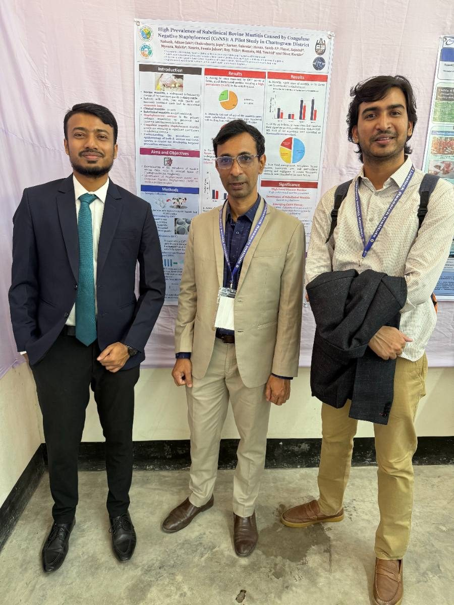

Research
Evidence for better surveillance and better decisions.
My research links field epidemiology, microbiology, and genomic analysis to questions at the human–animal–environment interface.
Current work 01
Avian influenza genomic epidemiology
Assessing geographic concentration in H5 genomic surveillance across South Asia and its implications for equitable outbreak intelligence.
This work connects genomic representation to the practical needs of preparedness, policy, and One Health coordination across the region.
View preprint
Current work 02
Measles virus genomic-surveillance gaps
Examining limitations in genomic surveillance during a nationwide Bangladesh outbreak, with a focus on the public-health value of timely and representative sequencing.
View preprintCurrent work 03
AMR at animal–human interfaces
Research spanning companion-animal wounds, food systems, and bacterial characterization to improve understanding of antimicrobial-resistance risks in Bangladesh.
See publicationsInfectious disease epidemiology
Surveillance across animal and human populations.
Antimicrobial resistance
Molecular characterization, stewardship, and One Health risk.
Zoonotic diseases
Detection, transmission, and prevention.
Genomic surveillance
Sequence availability, representativeness, and preparedness.
Bioinformatics
Genomic and phylogenetic analysis for public-health questions.
Food microbiology
Food safety and pathogen detection in animal-source foods.